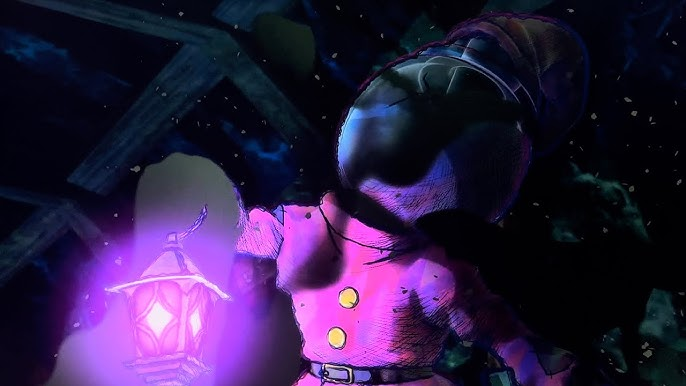

To your surprise, a bright light started to emanate from somewhere, your chest, you realize.
The monster didn't seem to like the sudden light in the dimly lit mine as it moved back from you. With a sudden boost of confidence, you began to move towards the monster, causing it to shriek.
You notice the skin on the monster began to bubble from where your light was hitting it. Before long, the tar-like skin has evaporated, along with it, the monster.